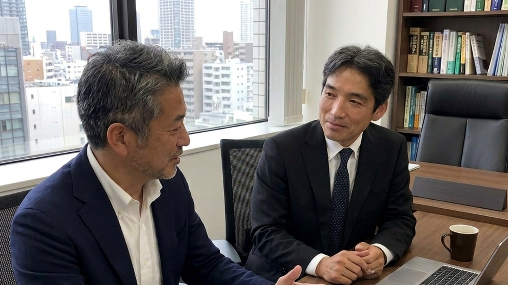

LIBEREST SOCIAL INSURANCE & LABOR CONSULTANT OFFICE
人を大切にする経営を、
労務から支える。
人と組織の力を引き出し、
企業の発展と働く人々の豊かさにつなげる。

ABOUT LIBEREST
「人」を大切にすることが、
「経営」を支える。
企業の成長には、 人と組織の力が欠かせません。
一方で、企業経営の現場では、 労務管理、人材育成、組織づくり、 労務トラブルなど、 「人」に関するさまざまな課題が生まれます。
リベレスト社会保険労務士事務所では、 社会保険労務士としての専門性を基盤に、 「人」と「組織」の両面から 中小企業の経営を支援します。
法律や制度を守るだけではなく、 働く人が安心して力を発揮できる環境をつくる。
それが、企業の持続的な成長にも つながると考えています。
SERVICE
人と組織に関する課題を、
6つのサービスで支援します。
日々の労務管理から、 人材育成・組織づくりまで。 経営者の皆さまの課題に合わせて支援します。
人材育成・
組織づくり
ICM組織サーベイやカードを活用し、 「個人と組織の成長」を支援します。
詳しく見る →
労務
コンサルティング
経営者の身近な相談相手として、 人事・労務の課題を整理します。
詳しく見る →
社会保険・
労働保険手続
社会保険・労働保険に関する 各種手続きを適切に支援します。
詳しく見る →
就業規則・
職場環境整備
会社と従業員の双方にとって より良い職場環境を整えます。
詳しく見る →
労務トラブル
予防・対応
問題が起こってからではなく、 未然に防ぐ仕組みづくりを支援します。
詳しく見る →
助成金
活用支援
企業の人材・労務施策に合わせ、 活用可能な助成金を検討します。
詳しく見る →
REPRESENTATIVE
代表
馬場 英行
社会保険労務士
中小企業診断士
営業職、労働組合、 総務・人事の経験を通じて、 一貫して「人」と「組織」に 向き合ってきました。
労務の専門性だけではなく、 経営、人材育成、組織づくり、 健康経営などの視点を組み合わせ、 中小企業を支援しています。
代表のこれまでの歩みを見る →QUALIFICATION
幅広い専門性を、
中小企業の支援に活かします。
国家資格・公的資格
社会保険労務士
中小企業診断士
第一種衛生管理者
FP2級技能士
人材育成・組織づくり
自立型人財組織育成士
セルフケアファシリテーター
承認ファシリテーター
健康・両立支援
健康経営エキスパートアドバイザー
両立支援コーディネーター
OFFICE
事務所概要
中小企業診断士
その他、人材育成・組織づくり、 健康経営等に関する資格・ライセンス
労務コンサルティング
就業規則・職場環境整備
助成金活用支援
人材育成・組織づくり
労務トラブル予防・対応